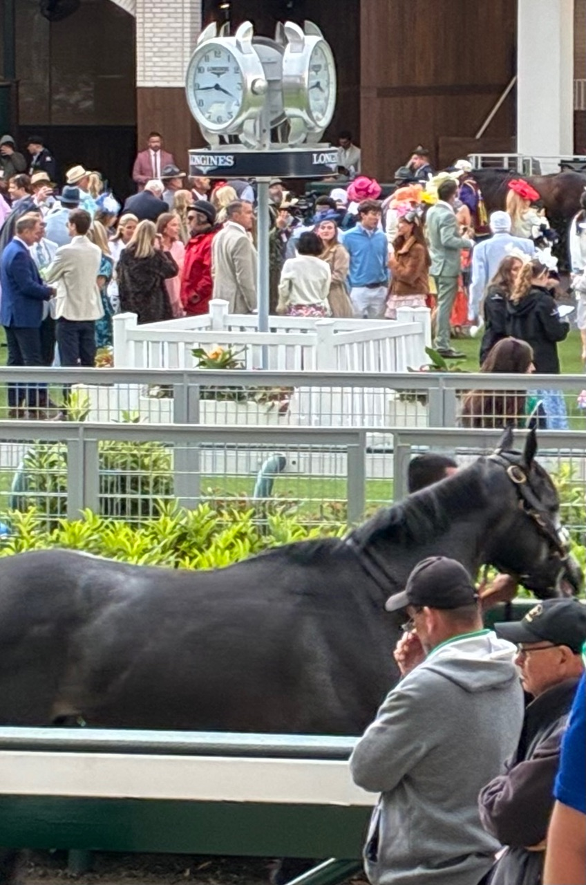

Likely the most famous (or infamous) article written about The Kentucky Derby was penned by Hunter S. Thompson in 1970. The title will give you a sense of what was to follow: “The Kentucky Derby Is Decadent and Depraved.” Thompson offered a soon-to-be-extinct magazine a crazed look at the goings-on around the race, and somewhat ironically, he and his English illustrator, Ralph Steadman, were the ones who ended up more decadent and depraved than anyone else. (Though the article was awash in fiction, it was the first installment of what became known as the Gonzo journalism practiced by Thompson).
The writer’s take on the most famous of horse races was entertaining though highly cynical, perhaps because Louisville, his hometown, was a place where he spent time in jail and was often in trouble before joining the U.S. Air Force. But for this first-time Derby spectator who witnessed what is the oldest sporting event in the United States May 2, the race and the culture around it was anything but decadent and depraved – if we’re going to stick with alliteration, I’ll go with dynamic, distinguished and (given the wild finish) dramatic.
The Derby features the best 3-year-old colts in the land. The first leg of the Triple Crown (a feat achieved only 13 times, the last in 2018) always takes place on the first Saturday in May, amid the most vibrantly dressed spectators (more than 150,000) you’ll find at any venue. Big brims adorn many of the ubiquitous hats. Atypical colors such as orange and purple are abundant. The men even wear ties like they’re attending a 1950s baseball game. NBC’s 4.5-hour on-site program before the Derby – an insanely long preview of a two-minute race – adds to the theater.
We were positioned near the starting gate about 20 rows up. The pricey tickets covered a cornucopia of food, from steak sandwiches to pimento sliders, and a variety of drinks (including mint juleps, of course) for the entire day and evening. Wagering windows and restrooms were all easily accessible, part of a revamp to the high-end areas in the past few years. Even the once rowdy and jammed infield – described by Thompson as “thousands of raving, stumbling drunks, getting angrier and angrier as they lose more and more money” has been modernized with rooftop viewing and other premium areas.
Because of the 45-minute-or-so wait between races, socializing with anyone who looks willing to be engaged is a popular activity. For those less socially inclined, Churchill Downs tries to keep them entertained by promoting activities such as the horses walking to the paddock – an event that is certainly pedestrian – on the video board.
Race storylines beforehand included whether Into Mischief could sire his record fourth Derby winner among his offspring. Three bloodline favorites – Renegade, Commandment and Potente – all had a chance going into the Derby (Into Mischief’s sire fee is $250,000). One item that made all 20 contestants equal: the bourbon-infused crowd would be the loudest any of the horses have ever dealt with.

We sang My Old Kentucky Home, and then they were off! We had a great view of the horses charging out of the starting gate. But as my son Ford pointed out, it’s the rare sports event where the higher seat is the better seat — you can see the whole track, whereas we needed to watch much of the mile-and-one-eighth race on the video board. We did see them again thundering around the final turn into the homestretch, where Golden Tempo (not on any of our wagering slips) nipped Renegade at the finish line for the 152nd crown and the opportunity to be covered in a garland of roses.
We also attended the Kentucky Oaks the day before at a much more reasonable ticket price. To my surprise, it has a history as distinguished as the Derby; both started a decade after the Civil War ended. Featuring 13 races, it culminated with the Oaks itself at 8:40 p.m. ET as NBC slotted it for primetime, a network first. Given the late post, that left plenty of time to enjoy the drink of the day, an Oaks Lily – vodka, triple sec and cranberry juice.
The organizers of the event are to be commended for making 150,000 or so feel comfortable and not crowded. Even departing Churchill Downs was easy; buses are plentiful to take you to the nearby Kentucky Exposition Center where most people park. The drivers have a sense of humor; ours started playing Willie Nelson’s “On the Road Again” as we left, while our bus to Churchill Downs was operated by an Abraham Lincoln lookalike who wore a top hat.

So if you’ve been reluctant to attend the Kentucky Derby because you read Thompson’s philippic back in college, rest assured that thinking the atmosphere is still decadent and depraved today would be the equivalent to backing the wrong horse.